Last updated: 2026-09-25
Checks: 7 0
Knit directory:
attend_aneuploidy/analysis/
This reproducible R Markdown analysis was created with workflowr (version 1.7.2). The Checks tab describes the reproducibility checks that were applied when the results were created. The Past versions tab lists the development history.
Great! Since the R Markdown file has been committed to the Git repository, you know the exact version of the code that produced these results.
Great job! The global environment was empty. Objects defined in the global environment can affect the analysis in your R Markdown file in unknown ways. For reproduciblity it’s best to always run the code in an empty environment.
The command set.seed(20260622) was run prior to running
the code in the R Markdown file. Setting a seed ensures that any results
that rely on randomness, e.g. subsampling or permutations, are
reproducible.
Great job! Recording the operating system, R version, and package versions is critical for reproducibility.
Nice! There were no cached chunks for this analysis, so you can be confident that you successfully produced the results during this run.
Great job! Using relative paths to the files within your workflowr project makes it easier to run your code on other machines.
Great! You are using Git for version control. Tracking code development and connecting the code version to the results is critical for reproducibility.
The results in this page were generated with repository version 61b26bc. See the Past versions tab to see a history of the changes made to the R Markdown and HTML files.
Note that you need to be careful to ensure that all relevant files for
the analysis have been committed to Git prior to generating the results
(you can use wflow_publish or
wflow_git_commit). workflowr only checks the R Markdown
file, but you know if there are other scripts or data files that it
depends on. Below is the status of the Git repository when the results
were generated:
Ignored files:
Ignored: .Rhistory
Ignored: .Rproj.user/
Ignored: .mcr_cache/
Ignored: data/aneu_scores.csv
Ignored: data/attend_barcodes.csv
Ignored: data/attend_data.xlsx
Ignored: data/clinical_gianlu_data.csv
Ignored: data/cnv_annotations/
Ignored: data/gistic/
Ignored: data/hrd_scores.csv
Ignored: data/msi_scores.csv
Ignored: data/old2_gistic/
Ignored: data/old_gistic/
Ignored: data/seg/
Ignored: data/tcga_2013/
Ignored: data/tmb_scores.csv
Ignored: data/variant_annotations/
Ignored: gistic2.sif
Ignored: output/clean_data/
Ignored: output/gistic_input/
Untracked files:
Untracked: gistic_7050713.log
Untracked: gistic_7050714.log
Untracked: refgenefiles/
Note that any generated files, e.g. HTML, png, CSS, etc., are not included in this status report because it is ok for generated content to have uncommitted changes.
These are the previous versions of the repository in which changes were
made to the R Markdown (analysis/04-aneuploidy-mmrd.Rmd)
and HTML (docs/04-aneuploidy-mmrd.html) files. If you’ve
configured a remote Git repository (see ?wflow_git_remote),
click on the hyperlinks in the table below to view the files as they
were in that past version.
| File | Version | Author | Date | Message |
|---|---|---|---|---|
| Rmd | 0f67d88 | bolt3x | 2026-09-21 | :art: Every aneuploidy-keyed figure, at both cuts |
| Rmd | 0c4840a | bolt3x | 2026-09-14 | :art: One vocabulary, one order, and a page that says why a figure is missing |
| Rmd | 35342b0 | bolt3x | 2026-09-14 | :art: The fill scale was there, the fill mapping was not, so the boxes drew white |
| Rmd | d688d09 | bolt3x | 2026-09-13 | :art: One spelling and one palette per concept, across every report |
| Rmd | bc4329e | bolt3x | 2026-09-13 | :bug: The clustering was never peak-restricted, and the page could not say so |
| Rmd | 0348325 | bolt3x | 2026-09-13 | :art: AS High / AS Low, arcsine + t-test on the score, no n=, arms back to red/light blue |
| Rmd | 05bf035 | bolt3x | 2026-09-07 | :sparkles: PD-L1+ per unit of tumour in the mixed panel; both transforms drawn |
| Rmd | e9aba61 | bolt3x | 2026-09-07 | :sparkles: PD-L1+ as a third tissue-content column, and both denominators like CD45+ |
| Rmd | 8666e4c | bolt3x | 2026-09-07 | :bug: A default is not a measurement — POLE in three tiers, mutation status in three states |
| Rmd | 793a8f2 | bolt3x | 2026-09-07 | :recycle: Reorder the site 00-11, split 07, fold concordance into 01, add ProMisE |
Question. Within MMR-deficient tumours, what does aneuploidy track — mutation status, or cell-type composition — and does either answer move when the aneuploidy cut does? Cohort. MMR-deficient only (n = 110), every aneuploidy-class figure drawn at both cuts (0.1 and 0.2), with one marked exception: the interaction model, which cannot be estimated inside a single stratum. Reads. The master (built on demand by get_master()), the long MAF, and the FlowPath annotation tree. Out of scope. Anything on the full cohort. Aneuploidy against TMB across both MMR strata -> 06-tmb. The same composition panels keyed on treatment response -> 05-response. Why there are two cuts and why both are reported -> 00-methods.
The restriction is the point. MMR deficiency is itself a route to genomic instability, so in the whole cohort any variable that tracks MMR status will also appear to track aneuploidy. Conditioning on MMRd removes that shortcut. The outcome in every figure is the same continuous aneuploidy score; what changes is the grouping on the x-axis — mutation status in Part 1, cell-type composition in Part 2. The cohort definition, the two aneuploidy cuts and the highlight colours are in 00-methods.
The two cuts, 0.1 and 0.2, split this report in two ways. Part 1 puts the score on the y axis and mutation status on the x axis, so its panels are the same at either cut and both cuts are drawn as dashed lines across them. Part 2 puts the class on the x axis, so every one of its figures is drawn at both cuts — the two cuts are the columns of each figure, and each column carries its own test. Raising the cut can only move a patient from the high box to the low box, so the columns are nested rather than independent: only patients scoring between the cuts move.
The restriction is the point. MMR deficiency is itself a route to genomic instability, so in the whole cohort any mutation that tracks MMR status will also appear to track aneuploidy. Conditioning on MMRd removes that shortcut. The outcome variable in every figure is the same continuous aneuploidy score; what changes is the grouping on the x-axis.
Genes are tested one at a time, each in its own panel, so a signal is attributable to a specific gene rather than to a union that could be driven by whichever gene is most frequently mutated. Two groups, kept deliberately separate:
| Group | Genes | Why they are grouped this way |
|---|---|---|
| MMR panel | PMS2, MLH1, MSH2, MSH6, MSH3 | Loss of any of these causes mismatch-repair deficiency. MSH3 pairs with MSH2 to form MutSb. |
| Wnt / b-catenin | CTNNB1, APC | An independent oncogenic pathway, not an MMR mechanism. |
| TP53 | TP53 | Handled separately: it is already a first-class column on the master. |
The MMR union (panel-altered = at least one pathogenic variant in any MMR panel gene) is shown last, after the per-gene panels. CTNNB1 and APC are deliberately excluded from that union, because folding them in would change what “panel-altered” means everywhere else in the pipeline. There is no Wnt union: with two genes the per-gene panels already show everything a union would.
P-values come from stat_compare_means(), Wilcoxon rank-sum for two groups and Kruskal-Wallis for more, uncorrected across panels. With one test per gene, treat them as descriptive.
Two sources, joined on pid. The aneuploidy score and its derived classes come from attend_master_joined. The mutation status is recomputed here directly from the long MAF rather than taken from the master’s collapsed columns, because the average of a variant row is meaningless; pathogenic_by_patient() and mutation_status_long() are the same helpers 01-data-integration used, so the two cannot drift. Crossing the crosswalk against the full gene list guarantees every gene gets a column even when it never appears in the MAF, with unmutated patients FALSE rather than NA.
cw <- build_barcode_pid(load_gianlu_clinical_data(), make_id_cfg())
maf <- read_intermediate("maf_data")
mut <- pathogenic_by_patient(maf, cw) # pid, TP53_pathogenic, panel_pathogenic (MMR union)
# Per-gene status for the one-gene-at-a-time panels: MMR panel + Wnt genes.
#
# ⚠️ NO replace_na(mutated, FALSE) HERE. It used to sit on the line below, and it turned
# every patient the MAF never reached — and every gene that was never statused — into
# "<GENE>-wt". Combined with the loader statusing only TP53, that made all five MMR panels
# and both Wnt panels a single wild-type box, captioned as though the comparison had been
# made. An uncalled gene is NOT a wild-type gene; the class stays NA so the panel drops the
# patient, and gene_called below reports how many were dropped and why.
gene_long <- cw |> distinct(pid) |>
tidyr::crossing(gene = attend_genes_per_gene) |>
left_join(mutation_status_long(maf, cw), by = c("pid", "gene")) |>
mutate(class = if_else(mutated, paste0(gene, "-mut"), paste0(gene, "-wt"))) # NA stays NA
gene_status <- gene_long |>
select(pid, gene, class) |>
pivot_wider(names_from = gene, values_from = class, names_glue = "{gene}_class")
# The denominator behind every per-gene panel below: how many patients this gene could
# actually be called in. A gene with 0 called is reported as a skip, never drawn.
gene_called <- gene_long |>
group_by(gene) |>
summarise(called = sum(!is.na(class)),
uncalled = sum(is.na(class)),
mutated_n = sum(class == paste0(gene, "-mut"), na.rm = TRUE),
.groups = "drop")
dat_all <- master |>
select(-any_of(c("TP53_pathogenic", "panel_pathogenic"))) |> # recompute here
left_join(mut, by = "pid") |>
left_join(gene_status, by = "pid") |>
mutate(
aneuploidy_value = suppressWarnings(as.numeric(.data[[attend_cols$aneuploidy]])),
TP53_class = if_else(TP53_pathogenic, "TP53-mut", "TP53-wt"),
panel_class = if_else(panel_pathogenic, "MMR-panel-altered", "MMR-panel-wt")
)The single filter the whole report rests on. The counts below are the cohort every figure that follows is drawn from — if the MMRd group is small, every p-value in this report inherits that.
have_mmr <- have_cols(dat_all, "MMR_class", "aneuploidy_value")
dat <- if (have_mmr) dat_all |> filter(MMR_class == attend_levels$mmr_deficient) else dat_all[0, ]
cat("Whole cohort :", nrow(dat_all), "patients\n")Whole cohort : 245 patientscat("MMR-deficient (this report):", nrow(dat), "patients\n")MMR-deficient (this report): 110 patientsif (nrow(dat) > 0)
cat(" with an aneuploidy score :", sum(!is.na(dat$aneuploidy_value)), "patients\n") with an aneuploidy score : 109 patientsif (have_mmr && nrow(dat) == 0)
note_skip("No MMR-deficient patients (MMR_class == '", attend_levels$mmr_deficient,
"') — every figure below is skipped.")Coverage of the manual highlight overlay on this report’s cohort.
attend_highlight holds one group, polipo
(sample 21S188, blue), and 21S188 is a sequencing barcode while
dat is keyed on pid;
highlight_coverage() scores the match after resolving the
id through the barcode -> pid crosswalk, so 1/1 matched
means the point really is drawn below and not that the string happened
to appear somewhere. 0/1 means the patient is outside the
MMRd restriction, which is a fact about this cohort, not a broken
overlay.
if (nrow(dat) > 0) cat(highlight_coverage(dat))highlight coverage (id cols: pid)
polipo: MATCHED (as 21S188, 21_5_188)Each panel is one MMR gene: patients carrying a pathogenic variant in
that gene (
Read the group sizes first. Some of these genes are mutated in very few patients, and a panel with a handful of -mut patients will show a wide box and an unstable p-value.
mmr_gene_vars <- paste0(attend_gene_panel, "_class")
if (nrow(dat) > 0) {
# Called vs uncalled FIRST, because it is the denominator the group counts sit inside.
# A gene with 0 called produces no panel at all, and that has to be visible as an absent
# measurement rather than inferred from a missing figure.
print(knitr::kable(
gene_called |> dplyr::filter(gene %in% attend_gene_panel),
caption = paste("Patients in whom each MMR panel gene could be called at all.",
"`uncalled` = no MAF for that patient, or the gene was never statused —",
"these are DROPPED from the panels below, not counted as wild-type")))
print(knitr::kable(group_counts(dat, mmr_gene_vars),
caption = "Patients per group, MMR panel genes (MMR-deficient cohort)"))
}
Table: Patients in whom each MMR panel gene could be called at all. `uncalled` = no MAF for that patient, or the gene was never statused — these are DROPPED from the panels below, not counted as wild-type
|gene | called| uncalled| mutated_n|
|:----|------:|--------:|---------:|
|MLH1 | 234| 0| 8|
|MSH2 | 234| 0| 8|
|MSH3 | 234| 0| 35|
|MSH6 | 234| 0| 8|
|PMS2 | 234| 0| 3|
Table: Patients per group, MMR panel genes (MMR-deficient cohort)
|comparison | MLH1-mut| MLH1-wt| MSH2-mut| MSH2-wt| MSH3-mut| MSH3-wt| MSH6-mut| MSH6-wt| PMS2-mut| PMS2-wt|
|:----------|--------:|-------:|--------:|-------:|--------:|-------:|--------:|-------:|--------:|-------:|
|MLH1_class | 7| 102| 0| 0| 0| 0| 0| 0| 0| 0|
|MSH2_class | 0| 0| 7| 102| 0| 0| 0| 0| 0| 0|
|MSH3_class | 0| 0| 0| 0| 32| 77| 0| 0| 0| 0|
|MSH6_class | 0| 0| 0| 0| 0| 0| 7| 102| 0| 0|
|PMS2_class | 0| 0| 0| 0| 0| 0| 0| 0| 3| 106|Aneuploidy score (aneu__aneuploidy_score, ASCETS arm-level burden from data/ascets/) in mutated versus wild-type patients, one panel per MMR gene, over the dat cohort above. The score is the outcome and the class is not the grouping, so this figure is the same at either cut and is drawn once: the two dashed lines are 0.1 and 0.2, and moving the cut moves only the point colours, never a box or a p-value.
if (nrow(dat) > 0)
aneu_box(dat, mmr_gene_vars,
"Aneuploidy score by MMR panel gene (MMR-deficient only)",
paste0("One panel per gene; pathogenic vs wild-type. n = ", nrow(dat),
" MMR-deficient patients"))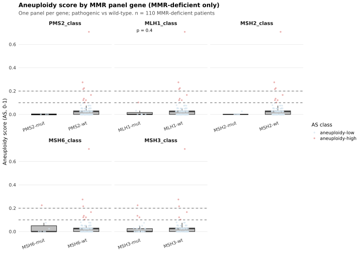
The same comparison for CTNNB1 and APC. These are shown apart from the MMR panel because they are a different mechanism: they are not a cause of mismatch-repair deficiency, so a signal here would mean something biologically different from a signal in the MMR panel above.
wnt_gene_vars <- paste0(attend_gene_panel_wnt, "_class")
if (nrow(dat) > 0)
knitr::kable(group_counts(dat, wnt_gene_vars),
caption = "Patients per group, Wnt pathway genes (MMR-deficient cohort)")| comparison | APC-mut | APC-wt | CTNNB1-mut | CTNNB1-wt |
|---|---|---|---|---|
| APC_class | 40 | 69 | 0 | 0 |
| CTNNB1_class | 0 | 0 | 19 | 90 |
The same aneuploidy score against Wnt-pathway mutation status, two panels. Cut-independent for the same reason as the MMR panels above — the dashed lines carry both cuts.
if (nrow(dat) > 0)
aneu_box(dat, wnt_gene_vars,
"Aneuploidy score by Wnt pathway gene (MMR-deficient only)",
"CTNNB1 and APC — shown separately from the MMR panel; not part of the MMR union",
ncol = 2)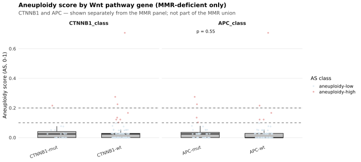
TP53 on its own, then the MMR panel union — at least one pathogenic variant in any of PMS2, MLH1, MSH2, MSH6, MSH3. The union is the last mutation view rather than the first: it is the least specific, and the per-gene panels above are what say which gene any union signal came from.
summary_vars <- c("TP53_class", "panel_class")
if (nrow(dat) > 0)
knitr::kable(group_counts(dat, summary_vars),
caption = "Patients per group, TP53 and the MMR union (MMR-deficient cohort)")| comparison | TP53-mut | TP53-wt | MMR-panel-altered | MMR-panel-wt |
|---|---|---|---|---|
| TP53_class | 19 | 90 | 0 | 0 |
| panel_class | 0 | 0 | 43 | 66 |
Aneuploidy score by TP53 status and by the MMR union, side by side, so a union signal can be read against the per-gene panels above that would have to explain it. Both dashed lines are the two cuts; neither box nor test depends on which one is chosen.
if (nrow(dat) > 0)
aneu_box(dat, summary_vars,
"Aneuploidy score by TP53 status and by the MMR panel union (MMR-deficient only)",
ncol = 2)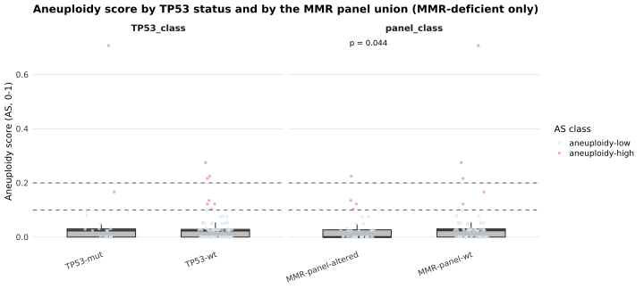
The non-mutation axes, still within MMRd: TMB, HRD, and MSI status. MMR_class is omitted because it is constant here by construction — every patient in this report is MMR-deficient.
MSI is worth reading carefully: MMR loss is the usual cause of microsatellite instability, so within an MMRd cohort the MSI-stable group is both small and unusual. None of these three classes is derived from the aneuploidy score, so the figure is again one figure with the two cuts drawn as dashed lines across it.
other_vars <- c("TMB_class", "HRD_class", "MSI_class")
if (nrow(dat) > 0) {
knitr::kable(group_counts(dat, other_vars),
caption = "Patients per group, score-derived classes (MMR-deficient cohort)")
aneu_box(dat, other_vars,
"Aneuploidy score by TMB / HRD / MSI class (MMR-deficient only)",
ncol = 3)
}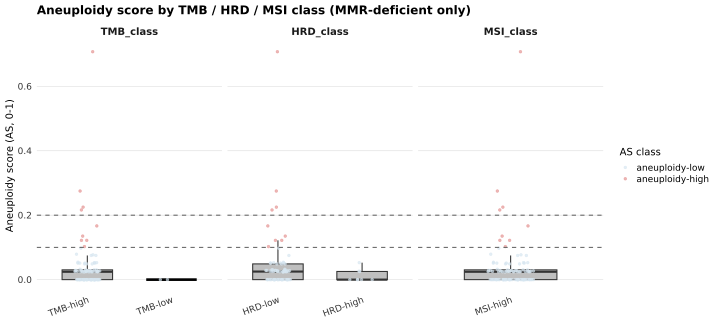
“Cell type” is phenotype_clean, the parenthetical phenotype label in the FlowPath export (changeable in code/load_phenotypes.R). Every count is taken inside the annotated region and expressed as a fraction, but the denominator changes the question, so all three are shown:
| Normalization | Denominator | The question it answers |
|---|---|---|
| all cells inside | every cell in the annotation | what fraction of the tissue is this cell type? |
| tumour cells inside | tumour cells only | how much of this cell type per unit of tumour? |
| CD45+ cells inside | leukocytes only | what is the composition of the immune compartment? |
Each is drawn twice: the raw fraction with a Wilcoxon test, and the arcsine-square-root-transformed fraction with a two-sample t-test. Agreement between the two is reassurance; disagreement means the result depends on the test rather than the data. No multiple-testing correction is applied anywhere in this report, and with one test per cell type per normalization that is many comparisons, so every p-value here is descriptive.
Three things are joined on pid: the aneuploidy class from the master, the per-patient cell-type composition read from the FlowPath tree by ihc_celltype_metrics(), and the continuous covariates. MMR status comes from add_scna_group(), so it is the same is_mmrd() call the copy-number and classification reports use. The class is joined from the LONG frame, so every patient appears once per cut carrying the class that cut gives them — the table below prints how many patients each cut calls high, and the difference between its two rows is exactly the patients the higher cut demotes.
master_grp <- add_scna_group(master) # adds mmr_group ("MMRd"/"MMRp") + scna_group
# One row per patient PER CUT, carrying the class that cut derives. Every cut-dependent
# figure in Part 2 joins against this rather than re-deriving a class locally, which is how
# aneuploidy_class came to read in two directions on one site (see add_molecular_classes()).
cuts_pt <- master_cuts |> select(pid, as_cut, as_cut_lab, aneuploidy_class)
# many-to-many is DECLARED, not silenced by accident: one metric row per patient meets two
# cut rows per patient, and doubling the frame is exactly the intended shape.
with_cuts <- function(d)
d |>
left_join(cuts_pt, by = "pid", relationship = "many-to-many") |>
filter(!is.na(aneuploidy_class))
# per-patient cell-type composition inside the annotation (reads the FlowPath tree)
ct_base <- ihc_celltype_metrics(load_ihc_celltypes(), load_imaging_data())
ct_all <- with_cuts(ct_base)
ct <- ct_all |> filter(pid %in% mmrd_pids) # <- the MMRd restriction
# The SINGLE-ROW MMRd frame. ihc_series_metrics() builds the content panels from raw counts
# and unique()s its constants, so it must see each patient once — handing it the long frame
# would double every celltype- and immune-sourced series.
ct_pt <- ct_base |> filter(pid %in% mmrd_pids)
# The leukocyte metrics are built HERE, beside ct, not in the immune section further down:
# the tissue-content panels above that section need imm_metrics, and a chunk that reads a
# variable a LATER chunk assigns knits fine in an interactive session (where it is already
# in the global env) and dies on a clean build with "object not found".
imm_base <- ihc_immune_metrics(load_ihc_celltypes(), load_imaging_data())
imm_all <- with_cuts(imm_base)
imm_metrics <- imm_all |> filter(pid %in% mmrd_pids) # <- the MMRd restriction
imm_pt <- imm_base |> filter(pid %in% mmrd_pids)
# per-patient continuous covariates + TP53 status, restricted the same way
numcol <- function(col) if (col %in% names(master)) suppressWarnings(as.numeric(master[[col]])) else NA_real_
pt_all <- tibble(
pid = master$pid,
aneuploidy_class = master$aneuploidy_class,
aneuploidy_score = numcol(attend_cols$aneuploidy),
HRD = numcol(attend_cols$hrd),
MSI = numcol("msi__MSI_SCORE"),
TP53 = if ("TP53_pathogenic" %in% names(master))
if_else(master$TP53_pathogenic, "TP53-abnormal", "TP53-normal") else NA_character_
)
# The two TMB definitions, added under their reader-facing names so every facet reads
# "TMB (normal)" / "TMB (ancestry corrected)" rather than an internal column name.
tmb_defs04 <- tmb_defs_present(master)
tmb_labs04 <- tmb_def_labels(tmb_defs04)
for (i in seq_along(tmb_defs04)) pt_all[[tmb_labs04[i]]] <- numcol(tmb_defs04[[i]])
covar_cols04 <- c(tmb_labs04, "HRD", "MSI")
pt <- pt_all |> filter(pid %in% mmrd_pids) # <- the MMRd restriction
# The same covariates once per cut, for the binarised panel further down. The scatter and
# the TP53 panel plot the raw score and stay on the single-row frame above, or every patient
# would be drawn twice at the same coordinates.
pt_cuts <- pt_all |> select(-aneuploidy_class) |> with_cuts() |> filter(pid %in% mmrd_pids)
cat("MMR-deficient patients :", length(mmrd_pids), "\n")MMR-deficient patients : 110 cat(" ... with cell-type metrics + aneuploidy class:", n_distinct(ct$pid), "\n") ... with cell-type metrics + aneuploidy class: 39 cat(" ... cell types measured :", n_distinct(ct$cell_type), "\n") ... cell types measured : 13 cat("TMB definitions plotted:", paste(tmb_labs04, collapse = " | "), "\n")TMB definitions plotted: TMB (normal) | TMB (ancestry corrected) cat("aneuploidy cuts drawn side by side:", paste(cuts, collapse = " and "), "\n\n")aneuploidy cuts drawn side by side: 0.1 and 0.2 if (nrow(ct) > 0) {
cls_by_cut <- ct |> distinct(pid, as_cut_lab, aneuploidy_class)
print(table(cut = droplevels(cls_by_cut$as_cut_lab),
aneuploidy = droplevels(factor(cls_by_cut$aneuploidy_class))))
} aneuploidy
cut aneuploidy-low aneuploidy-high
AS cut 0.1 34 5
AS cut 0.2 37 2One row per cell type and one column per aneuploidy cut, aneuploidy-high vs -low within each, over MMRd only, from the ct table built above. Each normalization is shown as a raw-fraction/Wilcoxon figure followed by its arcsine/t-test companion, and every test is computed inside its own panel, so the left and right columns are separate tests and are never pooled. Moving the cut moves patients from the high box to the low box and nothing else: the fractions on the y axis are the same numbers in both columns, so a contrast that survives the move is one the threshold is not making.
Each normalization is drawn twice: first the cell
types in attend_ihc_focus (T cytotoxic,
T helper, Macrophages, M1) on an
axis of their own, then every cell type on one axis. The focus figure
exists because Tumor reaches ~1.0 on the arcsine scale
while all four of these sit under ~0.6, so an axis wide enough for
Tumor leaves them unreadable — and these four are what the
figure is for.
Every cell type is drawn in one figure per normalization, on
a single shared y axis. A panel’s height therefore reads as
that cell type’s abundance relative to every other one, which is the
comparison the figure exists to support: Macrophages is
read against T cytotoxic on the same scale, not against a
rescaled axis of its own. scales = "free_y" would give each
panel its own range and make a cell type at a fraction of a percent of
the tissue draw the same box, in the same place, as one at half the
tissue. The cost is accepted deliberately — on the tumour-cell
denominator these cell types span orders of magnitude, so the rarest
panels sit low against a scale set by the most abundant.
The two figures differ in one respect on purpose: the focus
set shares one y axis, so those four cell types are directly
comparable, while the overview gives each cell-type row its
own — a row, not a panel, so the two cut columns of one cell
type always stay on one axis and the only difference between them is
which patients sit in which box. Over every measured cell type a single
abundant one sets a ceiling the rest never approach, and panels that are
boxes in the focus figure flatten to lines. Abundance is still readable
from each overview panel’s own axis, and the content panels below carry
it directly. The policy is attend_ihc_all_free_y.
The tumour phenotypes are excluded from that figure.
The export carries them separately (PanCK+ Tumor,
VIM+ Tumor), and on one shared axis a tumour phenotype near
1.0 on the arcsine scale compresses every immune panel under 0.35 into a
flat line. Tumour content is reported on its own panel below, against
the same denominator, so nothing is lost.
The axis stops at the largest upper whisker in the
figure (Q3 + 1.5 IQR over every class x cell-type cell), not at the
largest value, and the p-value label is placed inside that range by the
same call. Both follow from one measurement: ggpubr derives its default
label height from the plot-wide maximum, so a single extreme patient
simultaneously flattened every box and parked every p-value at the
ceiling, where it read as no p-value at all. The range is a
zoom (coord_cartesian()), so every patient
is still in the box statistics and in the test — nothing is dropped, and
a point above the axis is counted in the subtitle. Groups smaller than
attend_min_box_n still show a median crossbar instead of a
box.
Each cell type as a fraction of every cell in the annotation, so a panel reads “how much of the tissue is this”. Raw fractions, Wilcoxon.
draw_composition("frac_inside", "all cells inside")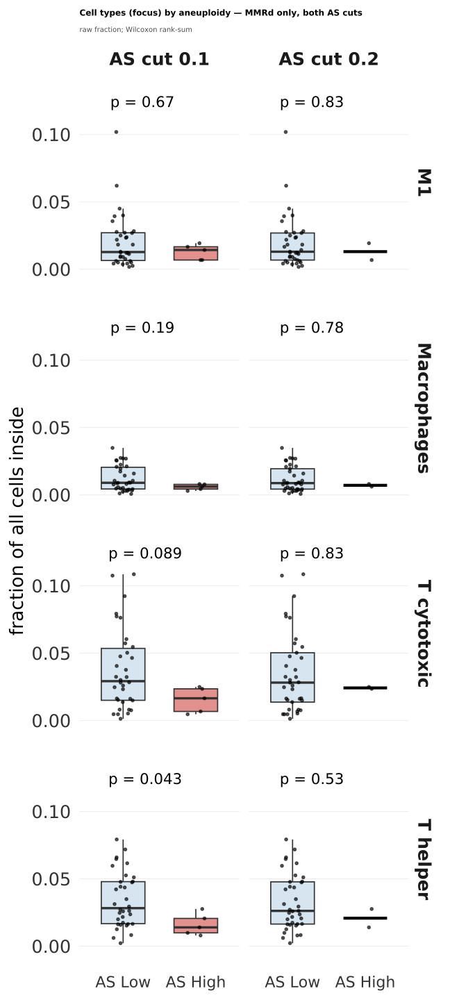
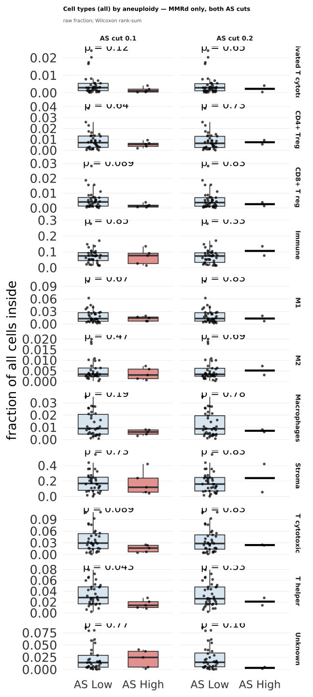
The same panels on the arcsine-square-root scale with a two-sample t-test, which is the variance-stabilised companion rather than an alternative answer.
draw_composition("frac_inside", "all cells inside", arcsin = TRUE)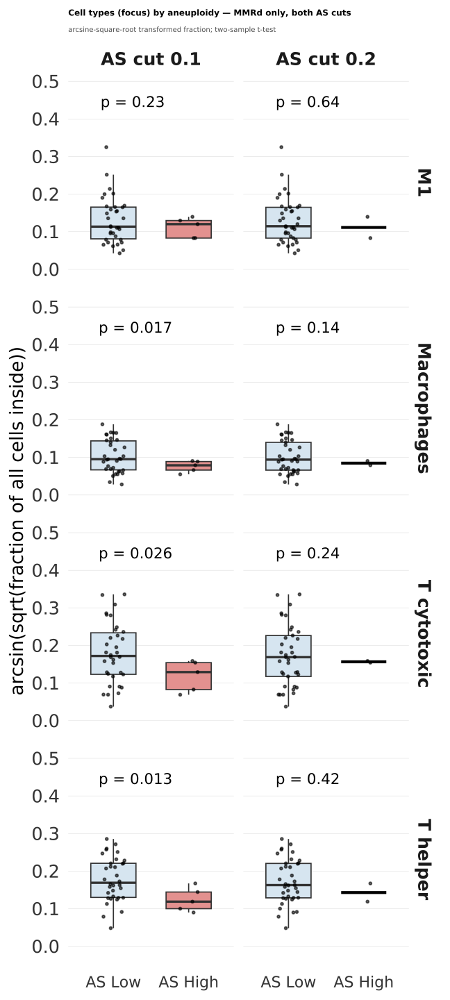
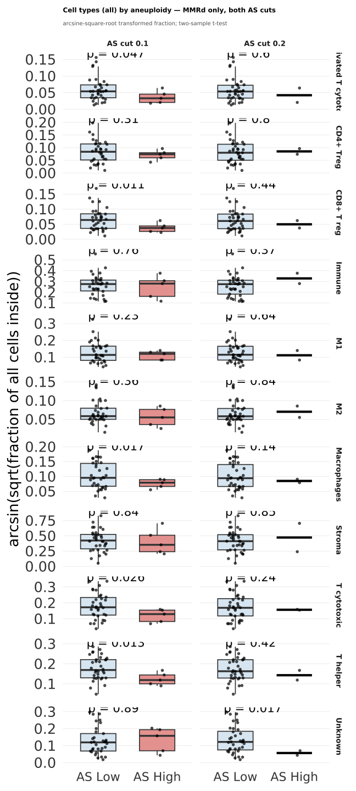
Each cell type per unit of tumour: the denominator is tumour cells only, so a shift here survives a change in how much tumour the annotation caught. Raw fractions, Wilcoxon.
draw_composition("frac_tumor", "tumour cells inside")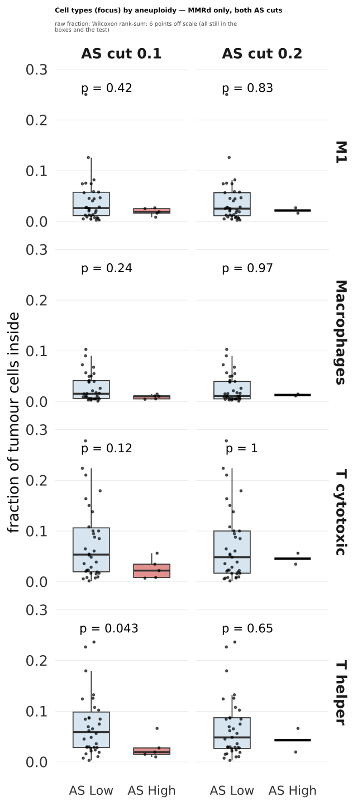
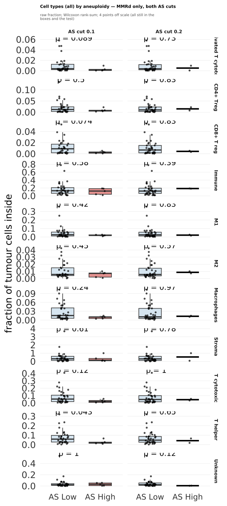
The arcsine/t-test companion of the panels above.
draw_composition("frac_tumor", "tumour cells inside", arcsin = TRUE)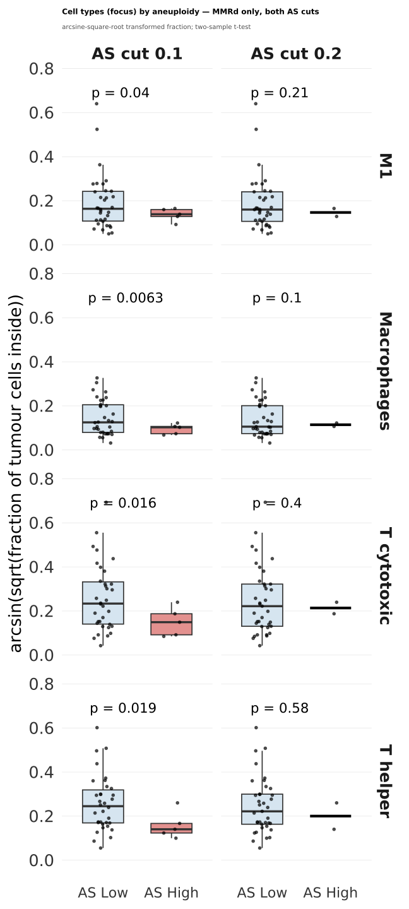
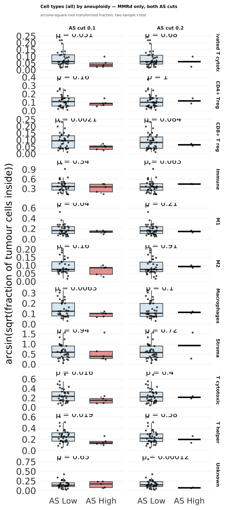
Composition of the immune compartment: the denominator is leukocytes, so tumour-content differences between patients cannot drive the contrast. Raw fractions, Wilcoxon.
draw_composition("frac_cd45", "CD45+ cells inside")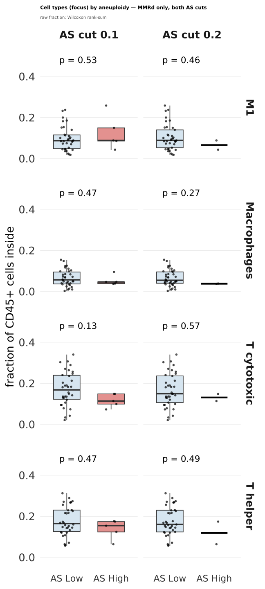
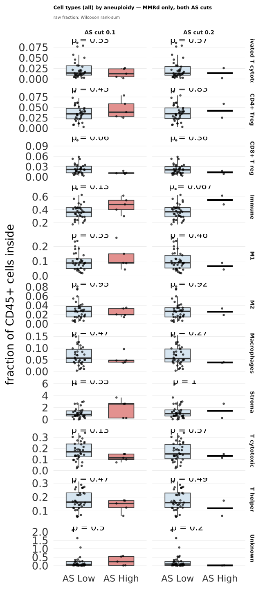
The arcsine/t-test companion of the panels above.
draw_composition("frac_cd45", "CD45+ cells inside", arcsin = TRUE)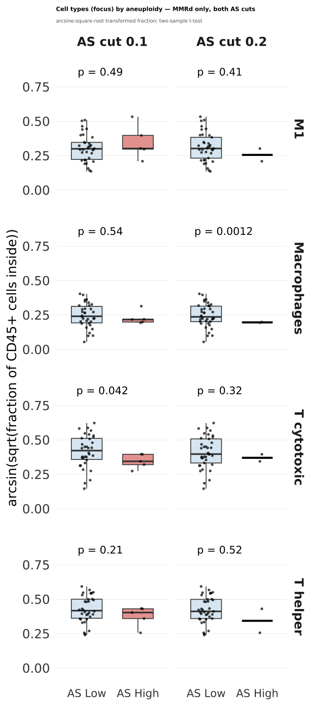
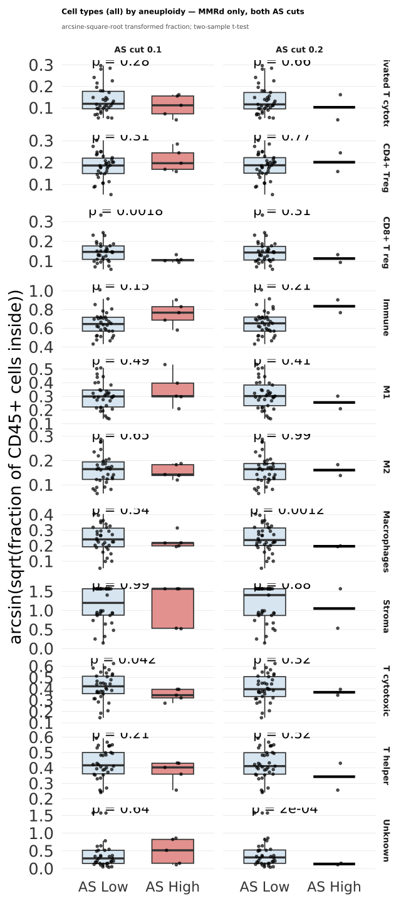
How much of the annotation is tumour, how much is leukocyte, and how
much is PD-L1-positive, as fractions of the same
denominator so the three are directly comparable. All three are
per-image constants pooled per patient by
ihc_celltype_metrics() — n_tumor_inside,
n_cd45_inside and n_pdl1_inside, each a count
of cells inside the annotation in the raw FlowPath per-cell export, over
n_inside. They are read as constants rather than as
cell-type rows because the export splits tumour across several
phenotypes (PanCK+ Tumor, VIM+ Tumor, …) and
carries no PD-L1 phenotype at all, so there is no single
row to select. all cells inside is the only
denominator on which all three are meaningful —
Tumor over tumour cells and CD45+ over CD45+ cells are both
identically 1 — so this panel is drawn once, not once per normalization.
Raw fractions with a Wilcoxon, then the arcsine/t-test companion, each
with the two aneuploidy cuts as its columns and its own Wilcoxon per
column — raising the cut cannot change any of these three fractions,
only which box a patient’s fraction is counted in.
⚠️ The PD-L1 column has a smaller cohort than the other two. PD-L1 was stained in only some batches, so a patient from an unstained batch is NA for PD-L1 and present in tumour and CD45+. Those patients drop out of the third box only, which means the three boxes on this one axis are not all drawn from the same patients. Read the n printed under each box before comparing their heights. PD-L1+ per unit of tumour, the other denominator, is in the immune-content section below.
# Built from the SINGLE-ROW frames: ihc_series_metrics() reads raw counts, and a patient
# arriving twice (once per cut) would be counted twice in every series. The cuts are joined
# on afterwards, which is what makes the two columns of the figure.
ct_content <- ihc_series_metrics(ct_pt, imm_pt, attend_ihc_content) |> with_cuts()
for (asin in c(FALSE, TRUE)) {
d <- ct_content |> mutate(.v = if (asin) arcsin_sqrt(frac) else frac)
p <- box_by_aneu(d, "all cells inside", asin, scope = "tissue content",
width_in = 9, height_in = 10, unit_override = "")
if (!is.null(p)) print(p)
}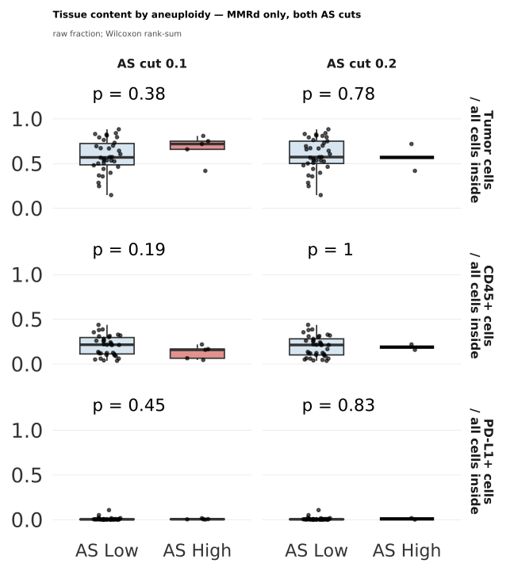
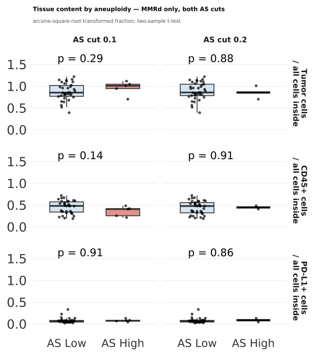
Three populations against different denominators:
Tumor over all cells inside (how much of the tissue is
tumour) beside CD45+ and PD-L1+ over tumour cells inside (how many
leukocytes, and how many PD-L1-positive cells, per tumour cell). Each
panel strip names its own denominator, because the y axis carries one
unit and cannot. The two right-hand columns share a denominator, so they
are directly comparable to each other; neither is
comparable to the tumour-content column on the left.
Counts come from the raw FlowPath per-cell export as per-image
constants pooled per patient (n_tumor_inside,
n_cd45_inside, n_pdl1_inside over
n_inside / n_tumor_inside). As in the panel
above, PD-L1 was stained in only some batches, so the PD-L1 column is
drawn from fewer patients than the other two — read the n under each
box.
CD45+ / tumour cells and PD-L1+ / tumour cells are ratios,
not proportions — they exceed 1 wherever those cells outnumber
tumour cells — and arcsin_sqrt() clamps its input to [0,
1]. Both versions are drawn, and the count of values above 1 is printed
above the figures and in the transformed figure’s own
subtitle: those patients all land on the same value there, so a clamped
group is a wall of identical numbers and its t-test is not
interpretable. Read the raw/Wilcoxon panel whenever that count is
non-zero; when it is zero the transform is exact and the two panels are
the usual pair. The two aneuploidy cuts are again the columns, and the
clamp count is a property of the ratios, so it is identical in both.
# Same single-row input as the panel above, and the clamp count is taken BEFORE the cut join
# so it counts patients, not patient-cut rows — the two cuts do not change a ratio.
mix_pt <- ihc_series_metrics(ct_pt, imm_pt, attend_ihc_content_mixed)
mix <- mix_pt |> with_cuts() |> mutate(.v = frac)
n_over <- sum(mix_pt$frac > 1, na.rm = TRUE)
cat("patients:", n_distinct(mix$pid), "| series:",
paste(gsub("\n", " ", levels(mix$cell_type)), collapse = " | "),
"\nvalues above 1 (a ratio, not a proportion):", n_over,
if (n_over > 0) " <- clamped by arcsin_sqrt() in the transformed figure below" else "", "\n")patients: 39 | series: Tumor cells / all cells inside | CD45+ cells / tumour cells inside | PD-L1+ cells / tumour cells inside
values above 1 (a ratio, not a proportion): 5 <- clamped by arcsin_sqrt() in the transformed figure below # Raw, then the arcsine/t-test companion. The companion carries a CLAMP COUNT because
# arcsin_sqrt() bounds its input to [0, 1] and BOTH per-tumour columns are ratios that can exceed it:
# every value above 1 lands on pi/2, so a clamped group is a wall of identical numbers and
# its t-test is not interpretable. When the count is 0 the transform is exact and the note
# does not appear, which is the case this figure is drawn for.
for (asin in c(FALSE, TRUE)) {
note <- if (asin && n_over > 0)
sprintf("; %d value%s > 1 CLAMPED to pi/2 by arcsin(sqrt()) — read the raw panel",
n_over, if (n_over == 1L) "" else "s") else ""
d <- mix |> mutate(.v = if (asin) arcsin_sqrt(frac) else frac)
p <- box_by_aneu(d, "the denominator in each panel", arcsin = asin,
scope = "tissue content, mixed denominators",
width_in = 9, height_in = 10, unit_override = "", extra_note = note)
if (!is.null(p)) print(p)
}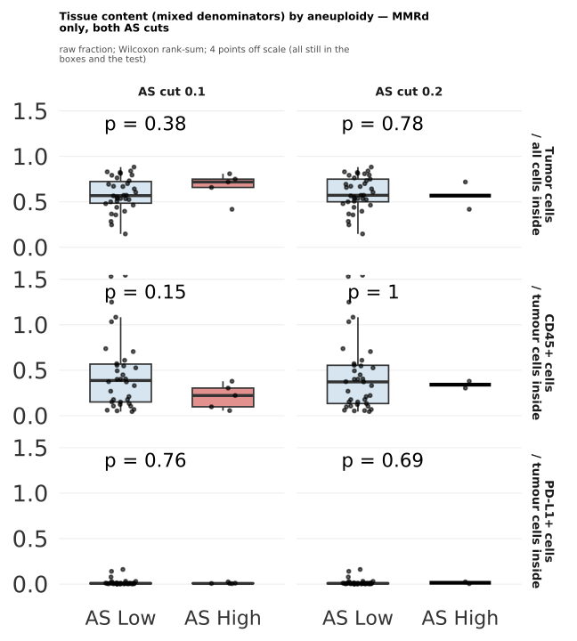
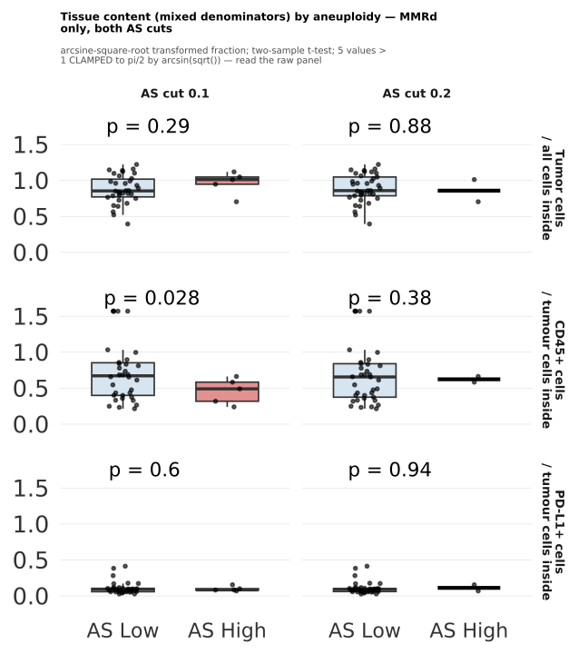
The question this report exists for: among MMR-deficient tumours, is aneuploidy-high associated with an immune-cold phenotype?
Two leukocyte metrics counted inside the annotation — CD45+ total (all leukocytes) and CD3+CD45+ (double-positive T cells) — under each normalization. CD3+CD45+ requires a CD3_sign column in the FlowPath export; without it those rows are NA and their facets drop out on their own.
cat("MMR-deficient patients with immune metrics:", n_distinct(imm_metrics$pid),
"| metrics present:", paste(sort(unique(imm_metrics$metric)), collapse = ", "), "\n")MMR-deficient patients with immune metrics: 39 | metrics present: CD3+CD45+, CD45+, PD-L1+ CD45+ total and CD3+CD45+ fractions from imm_metrics, by aneuploidy class, one row per metric and one column per aneuploidy cut, within MMRd. One figure per denominator rather than one figure with all three: a shared axis is only honest between panels that are fractions of the same thing, and CD3+CD45+ over CD45+ sits an order of magnitude above the same numerator over all cells inside. The denominator is named in each subtitle. Each column carries its own test on the same fractions, so a contrast present in only one of them is one the threshold is producing.
if (nrow(filter(imm_metrics, is.finite(frac))) > 2) {
# Denominator order is the order ihc_immune_metrics() declares its specs in, so the
# figures come out widest-denominator first however the table happened to be sorted.
for (dn in unique(imm_metrics$denom_label))
for (asin in c(FALSE, TRUE)) {
p <- box_immune(imm_metrics, dn, asin, width_in = 10, height_in = 9)
if (!is.null(p)) print(p)
}
} else note_skip("No finite immune metrics in the MMRd cohort (CD3/CD45 counts missing) — skipping.")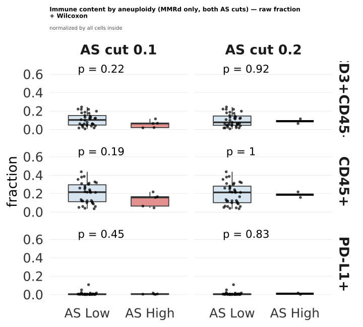
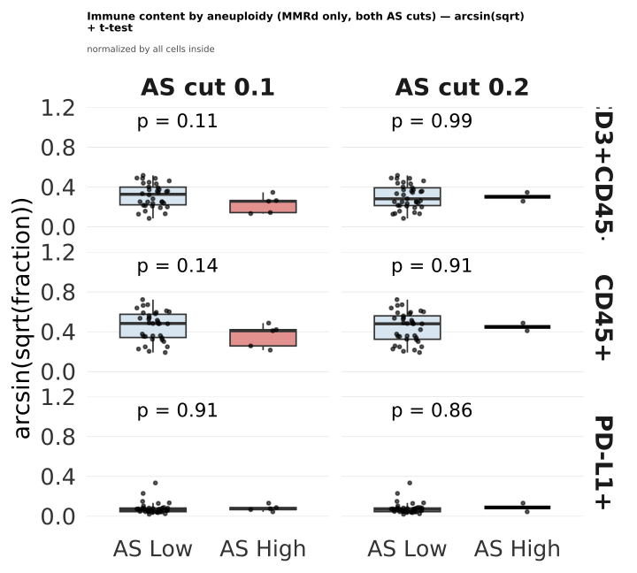
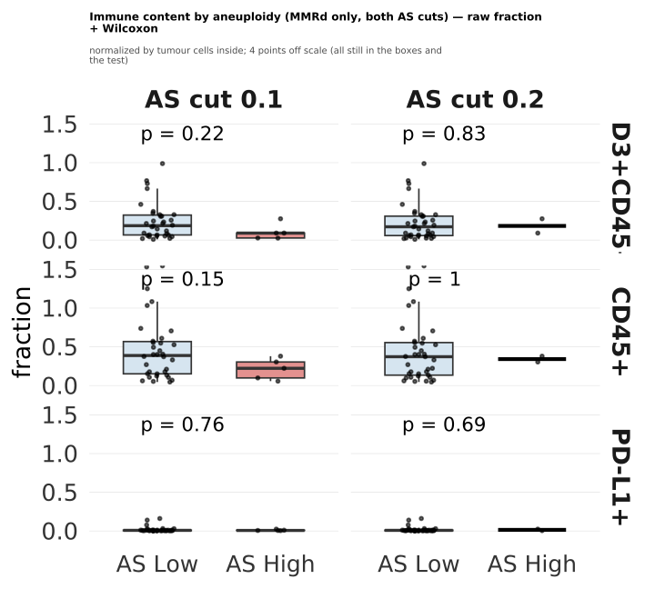
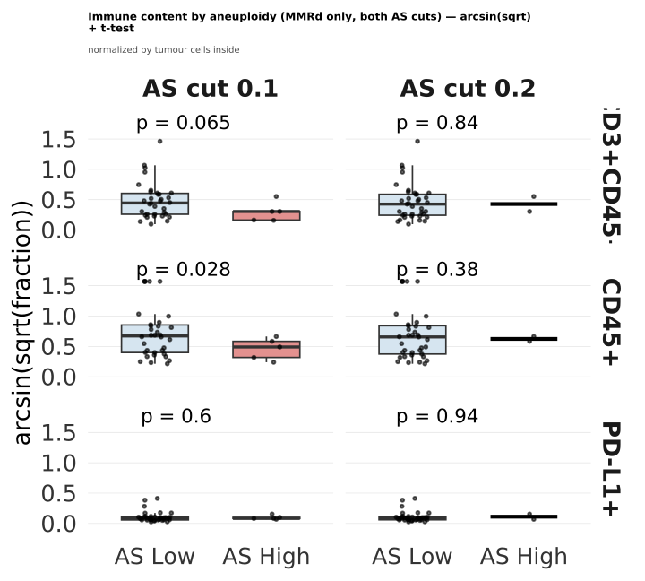
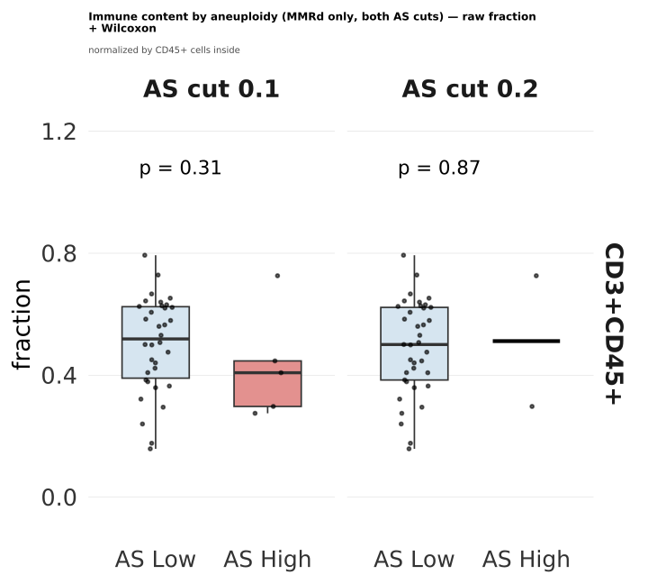
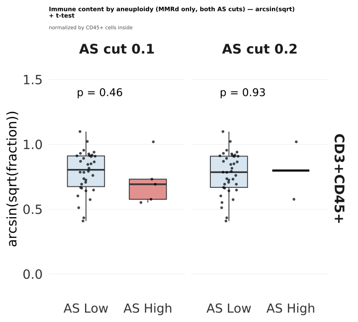
Of everything above, one comparison is designated primary: CD45+ / all cells inside, tested with the arcsine-square-root transform and a two-sample t-test. The Wilcoxon on the raw fraction is reported next to it as a companion, not a substitute. The other two normalizations, and CD3+CD45+, are secondary — they can and do degrade to a skip when counts are missing.
Naming one primary endpoint in advance is what keeps this from being a search across six panels for the smallest p-value. The endpoint is named once and tested once per cut: two cuts is two tests of one pre-specified contrast, not two chances at it, and a primary that holds at one cut and not the other is reported as exactly that.
mmrd_arcsin_t_wilcox <- function(df, metric_, denom_) {
base <- df |> dplyr::filter(metric == metric_, denom_label == denom_, is.finite(frac))
rows <- list()
# One test per cut, never pooled: the two blocks hold the same patients under two
# classifications, so a test across both would count every patient twice.
for (lab in levels(droplevels(base$as_cut_lab))) {
d <- base |> dplyr::filter(as_cut_lab == lab)
tab <- table(d$aneuploidy_class) # a factor, so an empty arm is a 0, not a dropped name
if (length(tab) < 2 || any(tab < 2)) {
note_skip("MMRd ", metric_, " / ", denom_, " at ", lab,
": insufficient n per aneuploidy arm — no test at this cut.")
next
}
t_res <- t.test(arcsin_sqrt(frac) ~ aneuploidy_class, data = d) # primary
w_res <- wilcox.test(frac ~ aneuploidy_class, data = d) # companion
cat(sprintf(paste0("MMRd %-10s / %-20s %-11s n=%d (high=%d, low=%d) ",
"arcsin-t p=%.3g Wilcoxon p=%.3g\n"),
metric_, denom_, lab, nrow(d), tab[["aneuploidy-high"]], tab[["aneuploidy-low"]],
t_res$p.value, w_res$p.value))
rows[[lab]] <- data.frame(as_cut_lab = lab, n = nrow(d),
n_high = tab[["aneuploidy-high"]],
n_low = tab[["aneuploidy-low"]],
t_p = t_res$p.value, w_p = w_res$p.value,
stringsAsFactors = FALSE)
}
if (!length(rows)) return(invisible(NULL))
list(d = base, stats = do.call(rbind, rows))
}
res_primary <- mmrd_arcsin_t_wilcox(imm_metrics, "CD45+", "all cells inside") # PRIMARYMMRd CD45+ / all cells inside AS cut 0.1 n=39 (high=5, low=34) arcsin-t p=0.143 Wilcoxon p=0.192
MMRd CD45+ / all cells inside AS cut 0.2 n=39 (high=2, low=37) arcsin-t p=0.905 Wilcoxon p=1res_tumor <- mmrd_arcsin_t_wilcox(imm_metrics, "CD45+", "tumour cells inside") # secondaryMMRd CD45+ / tumour cells inside AS cut 0.1 n=39 (high=5, low=34) arcsin-t p=0.0283 Wilcoxon p=0.152
MMRd CD45+ / tumour cells inside AS cut 0.2 n=39 (high=2, low=37) arcsin-t p=0.382 Wilcoxon p=1res_cd45n <- mmrd_arcsin_t_wilcox(imm_metrics, "CD3+CD45+", "CD45+ cells inside") # secondaryMMRd CD3+CD45+ / CD45+ cells inside AS cut 0.1 n=39 (high=5, low=34) arcsin-t p=0.457 Wilcoxon p=0.314
MMRd CD3+CD45+ / CD45+ cells inside AS cut 0.2 n=39 (high=2, low=37) arcsin-t p=0.934 Wilcoxon p=0.874The primary contrast on its own, one panel per cut. The subtitle carries each cut’s two p-values and its group size — at this n a single patient moving between groups can change the result, and moving the cut is precisely what moves patients between these two groups, so both counts are on the figure rather than in a caption.
if (!is.null(res_primary)) {
d <- res_primary$d
st <- res_primary$stats
ggplot(d, aes(aneuploidy_class, frac, fill = aneuploidy_class)) +
attend_box(d, x = "aneuploidy_class", y = "frac", by = "as_cut_lab",
fill = NULL, points = FALSE) +
highlight_points(d, "aneuploidy_class", "frac", base_size = 1.2, base_alpha = 0.5, base_const = "black") +
# Per panel, so the Wilcoxon on the figure is the one from that cut's own test above.
stat_compare_means(method = "wilcox.test", label = "p.format", size = 3) +
facet_wrap(~ as_cut_lab) +
scale_x_discrete(labels = as_label) +
scale_fill_manual(values = attend_aneu_cols, labels = as_label,
name = attend_as_legend) +
labs(title = "PRIMARY: CD45+ immune fraction (all cells inside) — MMR-deficient only",
subtitle = paste(sprintf("%s: arcsin(sqrt) t p = %s | Wilcoxon p = %s (n = %d)",
st$as_cut_lab, signif(st$t_p, 3), signif(st$w_p, 3), st$n),
collapse = " "),
x = NULL, y = "CD45+ fraction of all cells inside") +
attend_theme() + theme(legend.position = "none")
} else note_skip("Primary within-MMRd immune contrast skipped at every cut — see above.")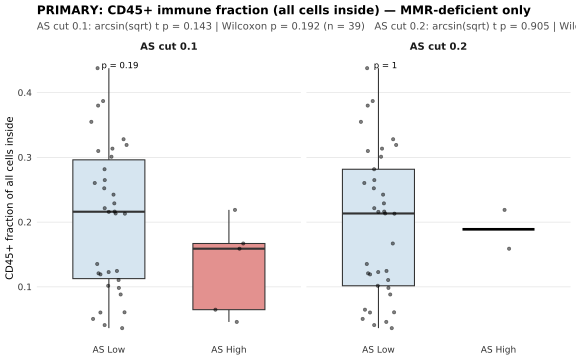
The single exception to this report’s MMRd restriction, and it has to be: an interaction asks whether the aneuploidy effect differs between MMRd and MMRp, which cannot be estimated inside one stratum. The model is arcsin(sqrt(CD45+/all cells inside)) ~ aneuploidy_class * mmr_group, fitted on both groups from imm_all. The interaction row is the one of interest: a large coefficient there is what justifies restricting everything else to MMRd. The model has aneuploidy_class as a term, so it is fitted once per cut and the table gains a cut column — a single fit over the stacked frame would use every patient twice under two contradictory labels. No correction is applied, and nothing is pooled across the two fits.
imm_int <- imm_all |>
dplyr::filter(metric == "CD45+", denom_label == "all cells inside", is.finite(frac)) |>
dplyr::left_join(master_grp |> dplyr::select(pid, mmr_group), by = "pid") |>
dplyr::filter(!is.na(mmr_group), !is.na(aneuploidy_class)) |>
dplyr::mutate(y = arcsin_sqrt(frac))
fit_one_cut <- function(d) {
if (!(nrow(d) > 4 && dplyr::n_distinct(d$aneuploidy_class) == 2 &&
dplyr::n_distinct(d$mmr_group) == 2)) {
note_skip("AS cut ", d$as_cut[1], ": not enough patients across both MMR groups and ",
"both aneuploidy classes for the interaction model.")
return(NULL)
}
fit <- lm(y ~ aneuploidy_class * mmr_group, data = d)
tb <- if (requireNamespace("broom", quietly = TRUE)) broom::tidy(fit) else {
m <- as.data.frame(summary(fit)$coefficients); m$term <- rownames(m); m
}
cbind(`AS cut` = as.character(d$as_cut_lab[1]), tb)
}
coef_tbl <- if (nrow(imm_int) > 0)
do.call(rbind, lapply(split(imm_int, droplevels(imm_int$as_cut_lab)), fit_one_cut)) else NULL
if (!is.null(coef_tbl)) {
print(knitr::kable(coef_tbl, digits = 3, row.names = FALSE,
caption = paste("arcsin(sqrt(CD45+/all-cells-inside)) ~ aneuploidy_class * mmr_group",
"— BOTH MMR groups, fitted separately at each aneuploidy cut,",
"no correction")))
} else note_skip("The interaction model could not be fitted at either aneuploidy cut.")
Table: arcsin(sqrt(CD45+/all-cells-inside)) ~ aneuploidy_class * mmr_group — BOTH MMR groups, fitted separately at each aneuploidy cut, no correction
|AS cut |term | estimate| std.error| statistic| p.value|
|:----------|:---------------------------------------------|--------:|---------:|---------:|-------:|
|AS cut 0.1 |(Intercept) | 0.465| 0.139| 3.343| 0.002|
|AS cut 0.1 |aneuploidy_classaneuploidy-high | -0.060| 0.152| -0.392| 0.697|
|AS cut 0.1 |mmr_groupMMRd | -0.010| 0.141| -0.068| 0.946|
|AS cut 0.1 |aneuploidy_classaneuploidy-high:mmr_groupMMRd | -0.037| 0.166| -0.224| 0.824|
|AS cut 0.2 |(Intercept) | 0.393| 0.071| 5.525| 0.000|
|AS cut 0.2 |aneuploidy_classaneuploidy-high | 0.066| 0.123| 0.533| 0.597|
|AS cut 0.2 |mmr_groupMMRd | 0.049| 0.075| 0.658| 0.514|
|AS cut 0.2 |aneuploidy_classaneuploidy-high:mmr_groupMMRd | -0.059| 0.161| -0.370| 0.713|Aneuploidy score against TMB (both definitions), HRD, and MSI, within MMRd. One point per patient, coloured by aneuploidy class, with Spearman’s rho per panel. Spearman rather than Pearson because these scores are bounded and skewed.
The two TMB panels are the same patients under the two definitions, so a visible difference between them is the germline correction moving values, not new data. This figure is not faceted by cut: x is the raw score and rho is computed on it, so both cuts give the identical panel. They appear as the two dashed vertical lines instead, which is what lets a reader judge whether either falls anywhere the points suggest a break.
scat <- pt |>
pivot_longer(all_of(covar_cols04), names_to = "covariate", values_to = "value") |>
filter(!is.na(aneuploidy_score), !is.na(value)) |>
mutate(covariate = factor(covariate, levels = covar_cols04))
if (nrow(scat) > 2) {
rho <- scat |>
group_by(covariate) |>
summarise(label = paste0("rho = ",
round(suppressWarnings(cor(aneuploidy_score, value, method = "spearman",
use = "complete.obs")), 2)), .groups = "drop")
ggplot(scat, aes(aneuploidy_score, value, colour = aneuploidy_class)) +
# Both cuts, on a figure that is otherwise cut-independent: the points, the fit and rho
# are the same at either, and the point colour is the primary cut.
geom_vline(xintercept = cuts, linetype = 2, colour = "grey40") +
highlight_points(scat, "aneuploidy_score", "value", base_colour = "aneuploidy_class",
base_palette = attend_aneu_cols,
base_name = attend_as_legend, jitter_width = 0, base_size = 1.5, base_alpha = 0.6) +
geom_smooth(method = "lm", se = FALSE, colour = "grey40", linewidth = 0.6) +
geom_text(data = rho, aes(x = Inf, y = Inf, label = label),
inherit.aes = FALSE, hjust = 1.05, vjust = 1.5, size = 3) +
facet_wrap(~ covariate, scales = "free_y", ncol = 3) +
labs(title = "Aneuploidy score vs continuous covariates (MMR-deficient only)",
subtitle = paste("Dashed lines: the two AS cuts,", paste(cuts, collapse = " and ")),
x = "aneuploidy score", y = "covariate value", colour = NULL) +
attend_theme() + theme(legend.position = "top")
} else note_skip("Not enough MMR-deficient patients with aneuploidy score + a covariate.")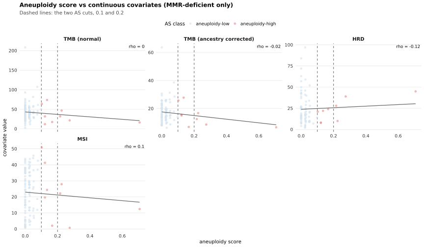
The same covariates against the binarised aneuploidy class rather than the continuous score — the categorical counterpart to the scatter above, with a Wilcoxon per covariate and per cut. Rows are the covariates, columns the two cuts (0.1 and 0.2), drawn from pt_cuts so each patient carries the class its column’s cut gives them. Comparing the two columns is what the scatter above cannot show: a correlation visible there but absent in both columns is being discarded by binarising at all, while one that appears in a single column is being produced by that cutpoint.
cb <- pt_cuts |>
pivot_longer(all_of(covar_cols04), names_to = "covariate", values_to = "value") |>
filter(!is.na(aneuploidy_class), !is.na(value)) |>
mutate(covariate = factor(covariate, levels = covar_cols04))
if (nrow(cb) > 2) {
ggplot(cb, aes(aneuploidy_class, value, fill = aneuploidy_class)) +
attend_box(cb, x = "aneuploidy_class", y = "value", by = c("covariate", "as_cut_lab"),
fill = NULL, points = FALSE) +
highlight_points(cb, "aneuploidy_class", "value", base_size = 0.6, base_alpha = 0.4,
base_const = "black") +
stat_compare_means(method = "wilcox.test", label = "p.format", size = 3) +
# Cut on the COLUMNS so "free_y" stays free per covariate: a covariate must keep one
# axis across the two cuts, or the columns cannot be read against each other.
facet_grid(covariate ~ as_cut_lab, scales = "free_y") +
scale_x_discrete(labels = as_label) +
scale_fill_manual(values = attend_aneu_cols, labels = as_label,
name = attend_as_legend) +
labs(title = "Continuous covariates by aneuploidy class (MMR-deficient only, both AS cuts)",
x = NULL, y = "covariate value") +
attend_theme() + theme(legend.position = "none")
} else note_skip("Not enough MMR-deficient patients with aneuploidy class + a covariate.")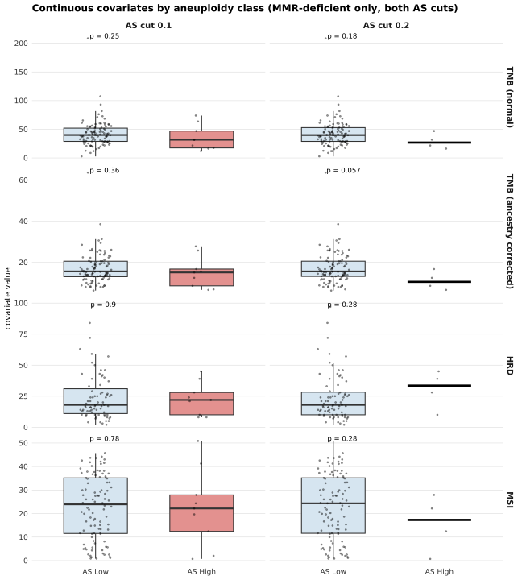
Within MMRd, aneuploidy score in TP53-abnormal versus TP53-normal tumours. TP53 status is TP53_pathogenic from the master, derived from the MAF in report 01. TP53 loss is the canonical driver of chromosomal instability, so this is the expected-positive control for the aneuploidy score itself: if aneuploidy does not separate on TP53 here, the score is suspect before any of the immune results are interpreted. The control is on the raw score and TP53 status does not depend on the cut, so this is one figure with both cuts drawn across it as dashed lines — where they fall relative to the two boxes is how much of this separation either cut can capture.
tp <- pt |> filter(!is.na(TP53), !is.na(aneuploidy_score))
if (nrow(tp) > 2 && dplyr::n_distinct(tp$TP53) == 2) {
ggplot(tp, aes(TP53, aneuploidy_score, fill = TP53)) +
attend_box(tp, x = "TP53", y = "aneuploidy_score", fill = NULL, points = FALSE) +
highlight_points(tp, "TP53", "aneuploidy_score", base_size = 1.5, base_alpha = 0.5,
base_const = "black") +
stat_compare_means(method = "wilcox.test", label = "p.format") +
geom_hline(yintercept = cuts, linetype = 2, colour = "grey40") +
scale_x_discrete(labels = as_label) +
scale_fill_manual(values = attend_tp53_cols, labels = as_label,
name = attend_tp53_legend) +
labs(title = "Aneuploidy by TP53 status (MMR-deficient only)",
subtitle = paste("Dashed lines: the two AS cuts,", paste(cuts, collapse = " and ")),
x = NULL, y = attend_as_axis) +
attend_theme() + theme(legend.position = "none")
} else {
note_skip("Not enough MMR-deficient patients with both TP53 classes, or TP53_pathogenic ",
"is missing from the master (rebuild report 01).")
}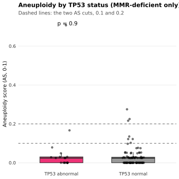
The pathologist’s per-patient scores compared between aneuploidy high and low, within MMRd. These come from the imaging sheet keyed by image → pid, averaged over a patient’s images for the continuous measures and taking the first non-missing value for the categorical calls. Both figures below are keyed on the aneuploidy class, so the frame is built once per cut here and each patient appears twice — once under each classification.
first_nonNA <- function(x) { x <- x[!is.na(x)]; if (length(x)) x[1] else NA }
imaging_pt <- load_imaging_data() |>
filter(!is.na(ID)) |>
group_by(pid = as.character(ID)) |>
summarise(
Immune_infiltrate = mean(suppressWarnings(as.numeric(Immune_infiltrate)), na.rm = TRUE),
Immune_infiltrate_PD1 = mean(suppressWarnings(as.numeric(Immune_infiltrate_PD1)), na.rm = TRUE),
ARID1A = first_nonNA(ARID1A),
Tumor_cells_PDL1 = first_nonNA(Tumor_cells_PDL1),
Immune_infiltrate_PDL1 = first_nonNA(Immune_infiltrate_PDL1),
.groups = "drop"
) |>
filter(pid %in% mmrd_pids) |> # <- the MMRd restriction
with_cuts() # <- one row per patient per aneuploidy cut
cat("MMR-deficient patients with imaging covariates:", n_distinct(imaging_pt$pid), "\n")MMR-deficient patients with imaging covariates: 40 cat(" ... drawn once per aneuploidy cut:", paste(cuts, collapse = " and "), "\n") ... drawn once per aneuploidy cut: 0.1 and 0.2 Continuous pathologist scores (immune infiltrate and PD-1 infiltrate, as percentages) by aneuploidy class, one row per score and one column per cut, with its own Wilcoxon in each panel. These are the pathologist’s independent read of the same immune question the FlowPath contrast above asked; the pathologist’s numbers do not move with the cut, so the only thing that differs between the two columns is which patients are in which box.
icc <- imaging_pt |>
pivot_longer(c(Immune_infiltrate, Immune_infiltrate_PD1),
names_to = "covariate", values_to = "value") |>
filter(is.finite(value))
if (nrow(icc) > 2) {
ggplot(icc, aes(aneuploidy_class, value, fill = aneuploidy_class)) +
attend_box(icc, x = "aneuploidy_class", y = "value", by = c("covariate", "as_cut_lab"),
fill = NULL, points = FALSE) +
highlight_points(icc, "aneuploidy_class", "value", base_size = 0.6, base_alpha = 0.4,
base_const = "black") +
stat_compare_means(method = "wilcox.test", label = "p.format", size = 3) +
# Cut on the columns, so "free_y" stays free per pathologist score rather than per cut.
facet_grid(covariate ~ as_cut_lab, scales = "free_y") +
scale_x_discrete(labels = as_label) +
scale_fill_manual(values = attend_aneu_cols, labels = as_label,
name = attend_as_legend) +
labs(title = "Pathologist immune scores by aneuploidy class (MMR-deficient only, both AS cuts)",
x = NULL, y = "pathologist %") +
attend_theme() + theme(legend.position = "none")
}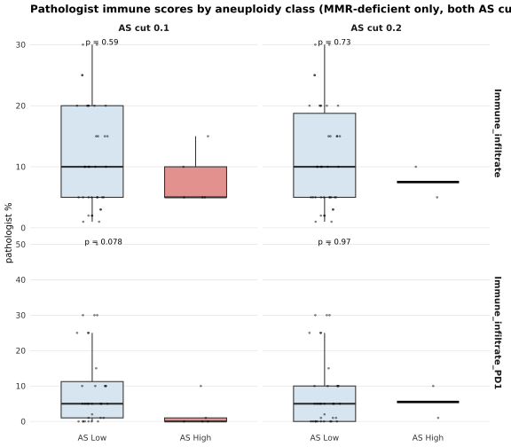
Categorical calls as stacked proportions — how each call distributes within aneuploidy high vs low, one row per call and one column per cut. Bars are proportions, so the group sizes are not visible in this figure; read them from the count printed above, and read them per column, because moving the cut is exactly what changes how many patients each bar is drawn from. MMR_Status is omitted because it is constant here by construction.
icat <- imaging_pt |>
select(as_cut_lab, aneuploidy_class, ARID1A, Tumor_cells_PDL1, Immune_infiltrate_PDL1) |>
pivot_longer(-c(as_cut_lab, aneuploidy_class), names_to = "covariate", values_to = "level") |>
filter(!is.na(level), level != "")
if (nrow(icat) > 0) {
ggplot(icat, aes(aneuploidy_class, fill = level)) +
geom_bar(position = "fill") +
# The pathologist's category sets differ per covariate and have no semantic palette of
# their own, so they take the project's qualitative one POSITIONALLY. Without it these
# bars used ggplot's default hue wheel. A stacked bar carries no per-patient highlight
# point, so the reserved blue at attend_pal()[1] cannot hide one here (rule [C], the
# same exemption the KM and ECDF palettes take).
scale_fill_manual(values = attend_pal(dplyr::n_distinct(icat$level))) +
facet_grid(covariate ~ as_cut_lab) +
labs(title = "Pathologist categorical calls by aneuploidy class (MMR-deficient only, both AS cuts)",
x = NULL, y = "proportion of patients", fill = NULL) +
attend_theme() +
theme(axis.text.x = element_text(angle = 20, hjust = 1))
}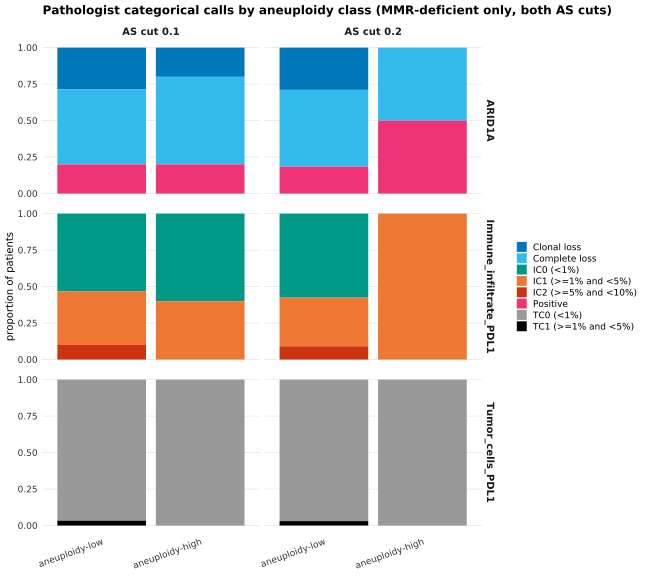
sessionInfo()R version 4.3.2 (2023-10-31)
Platform: x86_64-pc-linux-gnu (64-bit)
Running under: Rocky Linux 9.5 (Blue Onyx)
Matrix products: default
BLAS/LAPACK: FlexiBLAS OPENBLAS; LAPACK version 3.11.0
locale:
[1] LC_CTYPE=C.UTF-8 LC_NUMERIC=C LC_TIME=C.UTF-8
[4] LC_COLLATE=C.UTF-8 LC_MONETARY=C.UTF-8 LC_MESSAGES=C.UTF-8
[7] LC_PAPER=C.UTF-8 LC_NAME=C LC_ADDRESS=C
[10] LC_TELEPHONE=C LC_MEASUREMENT=C.UTF-8 LC_IDENTIFICATION=C
time zone: Europe/Rome
tzcode source: system (glibc)
attached base packages:
[1] stats graphics grDevices utils datasets methods base
other attached packages:
[1] data.table_1.18.4 fs_2.1.0 readxl_1.5.0 ggpubr_0.6.0
[5] here_1.0.2 lubridate_1.9.5 forcats_1.0.1 stringr_1.6.0
[9] dplyr_1.2.1 purrr_1.0.2 readr_2.2.0 tidyr_1.3.2
[13] tibble_3.3.1 ggplot2_4.0.3 tidyverse_2.0.0
loaded via a namespace (and not attached):
[1] gtable_0.3.6 xfun_0.58 bslib_0.9.0 rstatix_1.1.0
[5] lattice_0.22-5 tzdb_0.5.0 vctrs_0.7.3 tools_4.3.2
[9] generics_0.1.4 parallel_4.3.2 pkgconfig_2.0.3 Matrix_1.6-4
[13] RColorBrewer_1.1-3 S7_0.2.2 lifecycle_1.0.5 compiler_4.3.2
[17] farver_2.1.2 git2r_0.33.0 carData_3.0-5 httpuv_1.6.12
[21] htmltools_0.5.9 sass_0.4.10 yaml_2.3.12 crayon_1.5.3
[25] later_1.4.8 pillar_1.11.1 car_3.1-2 jquerylib_0.1.4
[29] whisker_0.4.1 cachem_1.1.0 abind_1.4-5 nlme_3.1-164
[33] tidyselect_1.2.1 digest_0.6.39 stringi_1.8.7 splines_4.3.2
[37] labeling_0.4.3 rprojroot_2.1.1 fastmap_1.2.0 grid_4.3.2
[41] cli_3.6.6 magrittr_2.0.5 dichromat_2.0-0.1 broom_1.0.13
[45] withr_3.0.3 scales_1.4.0 promises_1.5.0 backports_1.4.1
[49] bit64_4.8.6 timechange_0.4.0 rmarkdown_2.31 bit_4.6.0
[53] otel_0.2.0 ggsignif_0.6.4 workflowr_1.7.2 cellranger_1.1.0
[57] hms_1.1.4 evaluate_1.0.5 knitr_1.51 mgcv_1.9-0
[61] rlang_1.2.0 Rcpp_1.1.1-1.1 glue_1.8.1 rstudioapi_0.15.0
[65] vroom_1.7.1 jsonlite_2.0.0 R6_2.6.1
sessionInfo()R version 4.3.2 (2023-10-31)
Platform: x86_64-pc-linux-gnu (64-bit)
Running under: Rocky Linux 9.5 (Blue Onyx)
Matrix products: default
BLAS/LAPACK: FlexiBLAS OPENBLAS; LAPACK version 3.11.0
locale:
[1] LC_CTYPE=C.UTF-8 LC_NUMERIC=C LC_TIME=C.UTF-8
[4] LC_COLLATE=C.UTF-8 LC_MONETARY=C.UTF-8 LC_MESSAGES=C.UTF-8
[7] LC_PAPER=C.UTF-8 LC_NAME=C LC_ADDRESS=C
[10] LC_TELEPHONE=C LC_MEASUREMENT=C.UTF-8 LC_IDENTIFICATION=C
time zone: Europe/Rome
tzcode source: system (glibc)
attached base packages:
[1] stats graphics grDevices utils datasets methods base
other attached packages:
[1] data.table_1.18.4 fs_2.1.0 readxl_1.5.0 ggpubr_0.6.0
[5] here_1.0.2 lubridate_1.9.5 forcats_1.0.1 stringr_1.6.0
[9] dplyr_1.2.1 purrr_1.0.2 readr_2.2.0 tidyr_1.3.2
[13] tibble_3.3.1 ggplot2_4.0.3 tidyverse_2.0.0
loaded via a namespace (and not attached):
[1] gtable_0.3.6 xfun_0.58 bslib_0.9.0 rstatix_1.1.0
[5] lattice_0.22-5 tzdb_0.5.0 vctrs_0.7.3 tools_4.3.2
[9] generics_0.1.4 parallel_4.3.2 pkgconfig_2.0.3 Matrix_1.6-4
[13] RColorBrewer_1.1-3 S7_0.2.2 lifecycle_1.0.5 compiler_4.3.2
[17] farver_2.1.2 git2r_0.33.0 carData_3.0-5 httpuv_1.6.12
[21] htmltools_0.5.9 sass_0.4.10 yaml_2.3.12 crayon_1.5.3
[25] later_1.4.8 pillar_1.11.1 car_3.1-2 jquerylib_0.1.4
[29] whisker_0.4.1 cachem_1.1.0 abind_1.4-5 nlme_3.1-164
[33] tidyselect_1.2.1 digest_0.6.39 stringi_1.8.7 splines_4.3.2
[37] labeling_0.4.3 rprojroot_2.1.1 fastmap_1.2.0 grid_4.3.2
[41] cli_3.6.6 magrittr_2.0.5 dichromat_2.0-0.1 broom_1.0.13
[45] withr_3.0.3 scales_1.4.0 promises_1.5.0 backports_1.4.1
[49] bit64_4.8.6 timechange_0.4.0 rmarkdown_2.31 bit_4.6.0
[53] otel_0.2.0 ggsignif_0.6.4 workflowr_1.7.2 cellranger_1.1.0
[57] hms_1.1.4 evaluate_1.0.5 knitr_1.51 mgcv_1.9-0
[61] rlang_1.2.0 Rcpp_1.1.1-1.1 glue_1.8.1 rstudioapi_0.15.0
[65] vroom_1.7.1 jsonlite_2.0.0 R6_2.6.1